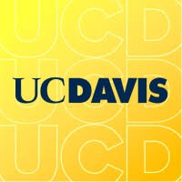

Himanshu Nimonkar
CS Researcher | AI Engineer | Cybersecurity Specialist | Software Developer
UC Davis CS Master's student (4.0 GPA) with expertise in AI, cybersecurity, and software engineering. Published researcher with 6 IEEE/Springer papers spanning healthcare AI (Best Paper Award winner), UI design, and machine learning applications. Currently working on anomaly detection at VIA Lab and CNN audio processing for wildlife conservation research. Former Software Engineering Intern at DeepCytes Cyber Labs where I reduced security vulnerabilities and built AI-powered tools using LangChain, transformers, and cloud infrastructure. Proficient in full-stack development, blockchain technology, and automated security testing. Created numerous projects including ResAuc (decentralized auction platform), PassCon (graphical authentication system), etc. Passionate about exploring places, photography, and sports when not coding or researching innovative technical solutions.
Education
Master of Science in Computer Science
University of California, Davis
GPA: 4.00/4.00
Bachelor of Technology in Information Technology (with Honors in Artificial Intelligence)
K. J. Somaiya College of Engineering, Mumbai
GPA: 3.81/4.00
$1,500 Scholarships
Top 5% of the Class
Professional Experience
Graduate Research Assistant (Software Engineering Team)
Dr. Dongyu Liu’s Visualization and Intelligence Augmentation (VIA) Lab, UC Davis
• Researched Context-Aware Prediction methodologies on time-series data and built a comprehensive pipeline software that integrates multiple worker model architectures (monolithic and mixture configurations) across datasets of various domains. Developed a unified data processing pipeline with direct CSV-to-tensor conversion, lazy loading capabilities for GPU memory optimization, and eliminated intermediate file dependencies. Established performance benchmarks and implemented Optuna-based hyperparameter optimization for model tuning and validation.
• Ideated Sintel/Orion's anomaly detection framework's refactor with a modular design and optimized data transformations, reducing computational overhead by 9%.
Graduate Research Assistant (Machine Learning Team)
Department of Wildlife, Fish and Conservation Biology, UC Davis & School of Renewable Natural Resources (College of Agriculture), Louisiana State University
• Built CNN-based retraining pipeline for anthropogenic disturbance in bioacoustics research, processing 720+ hours of ARU audio data across 30 wetland sites, parsing RavenPro spectrograms and aligning .flac files via timestamp parsing algorithms, thereby improving hunter-produced gunshot detection by 8%. Set up a reproducible Conda environment with GUI deployment.
Software Engineering Intern
DeepCytes Cyber Labs (UK)
• Engineered an Android security testing app with Kotlin to find permission vulnerabilities in system functions (location, camera, mic, SMS, media), reducing security incidents by 42% in 5 enterprises, while leveraging Firebase for secure data management.
• Built real-time CVE/CWE data tracker with auto email alerts via user watchlists for network monitoring/encryption. Added host file tweaks boosting malware defense by 29%. Optimized deployments using GitHub Actions, AWS EC2, Nginx and Cloudflare.
• Built a CLI-based red-teaming automation toolkit to stress test apps and model threats, which detected 37 unidentified attack vectors with Burp Suite, Reconnaissance, Maltego, Shodan, BeEF, Metasploit, Nessus, John the Ripper, and Nmap to remediate vulnerabilities. Implemented CI/CD on AWS EC2 using Ansible playbooks and Jenkins, reducing deployment time by 8%.
• Architected DarkwebGPT, a threat intelligence tool using the DarkBERT API and Agile methods for dark web analysis.
• Built a LangChain-based legal assistant with Hugging Face transformers for IPC queries, increasing engagement by 25% while implementing QA models and LLMs with a Gradio interface. Set up a Docker pipeline on AWS EC2 to deploy MySQL databases for scaled data operations. Developed RESTful CRUD API based dashboards using postman, lifting user retention by 41%.
• Built test automation suite (UI, unit, integration) for DC website with Jest and Selenium, cutting bug detection time by 35%.
• Built an OSINT framework for cyber fraud analysis, improving case response time by 15% across the UK, EU, and APAC regions.
• Optimized deepfake detection via a hybrid ResNeXt CNN-LSTM architecture, improving accuracy by 9% for media forensics.
Machine Learning Research Intern
Dr. Irfan Siddavatam and Dr. Ashwini Dalvi Lab, K. J. Somaiya College of Engineering
• Published ”A Transfer Learning Approach for Classification of Knee Osteoarthritis” (ICEEICT 2023, IEEE Xplore), achieving 82.5% accuracy and 97.62% precision with a transfer-learned DenseNet-201 CNN model trained on 5,748 X-ray images for early OA detection with AI. Awarded BEST PAPER in technical session CS 03. DOI: 10.1109/ICEEICT56924.2023.10157147
• Published ”User Reception is Everything: Using a Neural Network to Predict iOS App Ratings” (ICDSA 2023, Springer LNNS), implementing ELECTRA transformer architecture on 97 multi-genre apps’ reviews, achieving 73% accuracy and 0.705 F1 score, with seaborn, sklearn, PyTorch, and NLTK for multi-class rating prediction. DOI: 10.1007/978-981-99-7820-5 34.
• Built air canvas framework for gesture-based character recognition, gaining 88.79% accuracy with TensorFlow and Mediapipe.
Information Interfaces Research Intern
Dr. Irfan Siddavatam Lab, Somaiya School of Design
• Published four IEEE and Springer papers on user-centered design for educational assessment, mental health support, pet welfare tracking, and university opportunity management systems. Research focused on identifying user needs through literature reviews and surveys, developing tailored interfaces, and validating designs through user testing.
Software Development Intern
The Marine Robotics Team, KJSCE
• Contributed to the development of YOLO v4-tiny and v5-based image processing models for detection tasks (gates, flares, G-man, Bootlegger, and underwater trash), and developed ROS Melodic Gazebo simulations for our AUV, Proton.
Web Development Intern
Sparkling Wings NGO
• Engineered WordPress website with domain configuration while integrating Google Maps API and Stripe API.
Software Testing Intern
Reha App
• Detected bugs in the software, including error handling and UI bugs.
Featured Projects
Vultra- Transitive Dependency Vulnerability Detector
• Integrated GitHub’s GraphQL API (GHSA) and NVD REST API to detect direct and transitive dependency vulnerabilities.
• Created GraphQL queries and mutations with Jest unit tests for live search, reducing production bugs by 5%.
• Engineered a modular framework with plug-and-play handlers (NpmParser/MvnParser tree traversal, regex CPE validation), having batched API queries with caching to reduce CI/CD workflow calls by 40%, while automating GitHub package manifest ingestion and vulnerability dashboards delivery with CWE/CVSS classifications.
ResAuc – Decentralized Auction System
• Developed ResAuc, a fullstack decentralized auction platform, using React, Node.js with Express.js, and MongoDB to support real-time bidding for 1000+ concurrent users, providing seamless integration in a distributed environment via RESTful APIs.
• Integrated ResilientDB with its immutable ledger for blockchain-based transparency. Included live bid tracking and secure auction finalization, reducing processing time by 40%.
• Top project of ECS-265 (UC Davis), transferred to ResilientApp org (ExpoLab) for Apache incubation.
PassCon – Graphical Password Auth
• Architected PassCon, a blockchain-based graphical password system with Django, JavaScript, Bootstrap, and MySQL to prevent brute-force attacks and password theft. Integrated salted hashing, account lockout, and icon shuffling with icon-based password selection and custom image upload modes for added security.
• Optimized server logging with Logstash, storing data in Elasticsearch for improved management.
Dynamic Website Connectivity Graph
• Built Python web app visualizing 116,000+ crawled sites with interactive force graphs and inspection tools using Pandas, Bokeh, Neo4j, and Strawberry GraphQL. Applied data mining for cluster detection and dimensional modeling for efficient queries.
• Made an ETL pipeline to extract metadata in an enhanced data warehouse. Deployed on Digital Ocean VPS with Cloudflare Security.

Charitap- Turning Spare Change into Real-World Impact
• Engineered a full-stack micro-donation platform integrating a Manifest V3 Chrome extension, React/Tailwind dashboard, and Node.js/Express/MongoDB backend with secure RESTful endpoints (JWT authentication), enabling seamless capture of purchase "round-ups" at checkout, automated disbursement to user-selected charities via Stripe Connect, and comprehensive impact tracking.
AndroMPol- Malware polymorphism Simulator.
• Developed an Android security testing app with Kotlin to find permission issues in system functions like location (Google Maps API), camera, mic, SMS, media; reducing incidents by 42% in 5 firms, while leveraging Firebase for secure data management.
Research Publications
A Transfer Learning Approach for Classification of Knee Osteoarthritis
IEEE ICEEICT 2023 – Achieved 82.5% accuracy and 97.62% precision with a transfer-learned DenseNet-201 CNN model trained on 5,748 X-ray images for early OA detection with AI. Awarded BEST PAPER in technical session CS 03.
User Reception is Everything: Using a Neural Network to Predict iOS App Ratings
Springer LNNS ICDSA 2023 – Implemented ELECTRA transformer architecture on 97 multi-genre apps’ reviews, achieving 73% accuracy and 0.705 F1 score, with seaborn, sklearn, PyTorch, and NLTK for multi-class rating prediction.
Streamlining Educational Assessment: A User-Centric Analysis of an AI-Powered Examination App
IEEE ICAST 2023 – Identified challenges in grading as a TA for the Machine Learning and UI Programming course and conceptualized an AI-powered application to streamline the process. Conducted extensive research through literature reviews, in-person, and online surveys with various other TAs, and developed a user interface tailored to their needs and effective UI principles.
Enhancing Pet Welfare: A User-Centered Method for GPS Tracking and Health Tracking Using Pawprints
IEEE ICTACS 2024 – Researched pet welfare through literature reviews, in-person, and online surveys. Developed a UI for a pet welfare app, analyzing effectiveness, usage quality, and accessibility, with people preferring this app over others for its counseling features and UI design.
Enhancing Student Welfare: A Comprehensive Analysis of the User Interface for a University Mental Health Counselling App
Springer ASCIS 2023 – Researched student mental health needs through literature reviews, in-person, and online surveys. Developed a university-specific UI for a mental health counselling app, analyzing effectiveness, usage quality, and accessibility, with 87.4% of students preferring this app over others for its counselling features and UI design.
UniExplorer: Revolutionizing the College Experience Through Comprehensive Opportunity Management
IEEE ICTACS 2024 – UniExplorer presents a software platform designed to streamline access to university opportunities, enabling students to easily navigate extracurriculars, internships, and projects while enhancing engagement and personal growth.
Technical Skills
Positions of Responsibility
Joint Sports Secretary
Managed sports & cultural festivals (20k+ attendees) at KJSCE.
Treasurer, Emfinity Math Club
Secured sponsorships, managed finances, and organized campus math events.
Vice Captain, The Marine Robotics Team
Led a multifaceted 22-member team in developing autonomous underwater vehicles. Also handled the budget, logistics, and permissions for the team.
Courses Taken
Graduate (MS in Computer Science)
- ECS 265 – Distributed Database Systems
- ECS 270 – Machine Learning & Discovery
- ECS 390 – The Teaching of CS
- ECS 260 – Software Engineering
- STA 220 – Data & Web Technologies for Data Analysis
- ECS 289L – AI in Health
- ECS 222A – Design and Analysis of Algorithms
Undergraduate (B.Tech Honors in Artificial Intelligence)
- Natural Language Processing
- Artificial Intelligence
- Data Science
- Machine Learning
- Deep Learning
Undergraduate (B.Tech in Information Technology)
- Data Structures
- Algorithms
- Database Management Systems
- Full Stack Web Technologies
- Object Oriented Software Engineering
- Computer Networks
- Operating Systems
- Cloud Computing
- DevOps
- Advanced Programming (Python)
- Theory of Computation
- UI Programming
- Vulnerability Analysis and Penetration Testing
- Modelling and Simulation
- Software Testing and Quality Assurance
- Digital Marketing
Achievements
ResAuc recognized as the Top Project in UC Davis’s ECS-265 course (Fall 2024) and adopted by the ResilientApp organization (ExpoLab) for Apache incubation.
Best Paper Award in CS 03 session of ICEEICT 2023 for Knee OA Classification Paper.
Scored 326 in GRE (168Q/158V/5.0 AWA) and 111 in TOEFL
MHT CET Exam Math Topper (Math Score: 100/100).
Project with the Best UI award in Codeissance 2022 hackathon.
Secured 4th place in KJSCE Smart India Internal Hackathon (2023).
Received IEEE Bombay Section's Young Professional program's Full Stack Training.
Completed IIT Bombay Trust Lab's FOSSx tool challenge with ClamAV.
Conducted a Workshop on Robot Operating System under The Marine Robotics Team.
Permissions app got featured on National Television (Zee Business).
Worked on a cybersafe campaign for the Deputy Mumbai Police Commissioner's Office.
Worked alongside the Governor of Maharashtra's creative office on multiple cyber initiatives.
Volunteering
Sparkling Wings NGO
Taught English & Math weekly to underprivileged children.
KJSCE Parvaah
Organized yoga day and blood donation drives. Worked with BMC (Mumbai Government) to clean Mithi River and Juhu Beach
Agasthya International Foundation
Mentored 6 school students of Raje Sambhaji School (Khar) to build an NFC-based women's safety hardware box as part of the Design Thinking Challenge organized by JP Morgan Chase & Co.
Languages Known
- English (Native)
- Hindi (Native)
- Marathi (Native)
- French (Intermediate)
- Gujarati (Intermediate)
Hobbies
- Exploring Places
- Cooking
- Photography
- Badminton
- Soccer
- Table Tennis
- Carrom
- Cycling